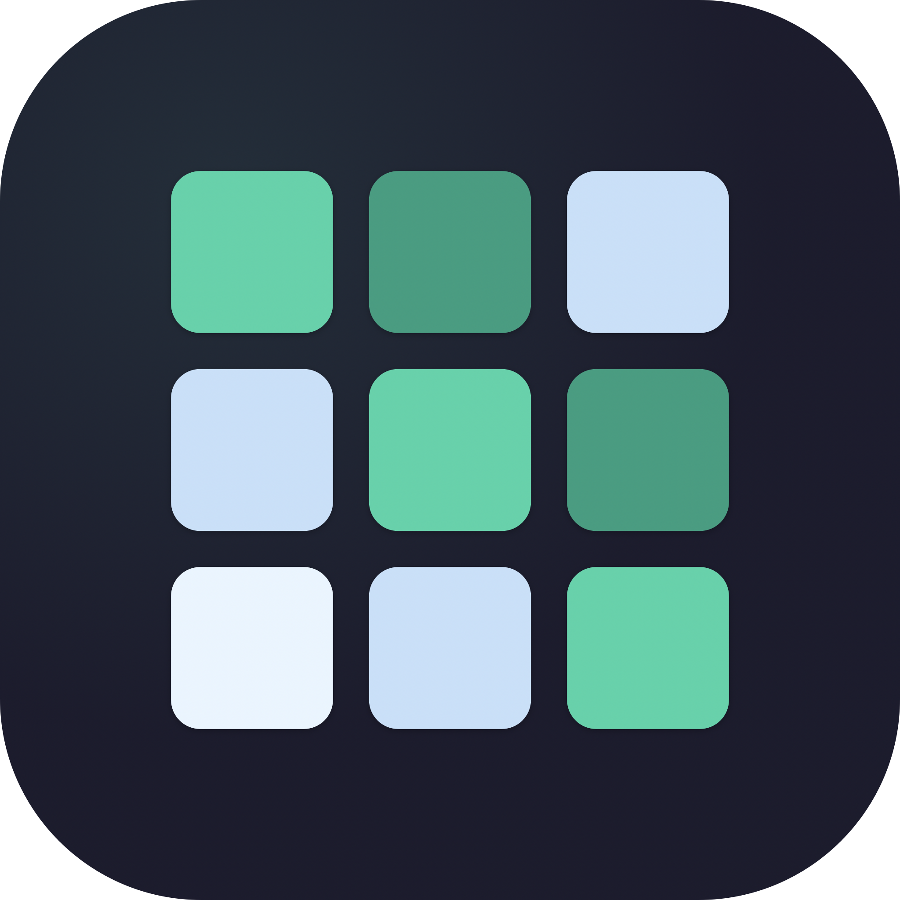

Reconstrueer je urenregistratie aan het einde van een traject — uit agenda-afspraken, leverancier-bijlagen en eigen aantekeningen. Native macOS app, lokaal-eerst, factuur-aansluitend.
Personen op de Y-as, weken op de X-as. Heat-map cellen kleuren naar uren-intensiteit. Concept (gestreept) vs bevestigd vs AI-voorstel (paarse rand met ✨) is in één oogopslag duidelijk.
Apple Calendar (EventKit), CSV met kolom-mapping, Excel (XLSX). Re-import doet geen dubbele inserts dankzij dedupe op event-id of bestand-regel. Hele importbatches in één klik terugdraaien.
Wissel tussen Anthropic Claude en OpenAI in Settings. Een anonimisatie-laag stuurt alleen rolnamen (intern_dev_1) en uren-aantallen — nooit echte namen of klantnamen.
Bewaar fase-structuur, vaste teamleden, of placeholder-rollen ("PM klant", "webbouwer leverancier") die bij apply ingevuld worden. "Opslaan als template" extracteert relatieve timing van bestaand project.
Per project: lijngrafiek uren-per-week (gestapeld per groep), staaf uren-per-fase, donut verdeling per persoon. Top 5 + "andere" om legenda leesbaar te houden.
Cross-project overzicht zodra geen project geselecteerd is — KPI strip (uren deze maand, lopende projecten, te factureren), project-grid met sparklines van laatste 8 weken, recente activiteit.
Lineaire ETA-extrapolatie in de matrix-totalen: "ETA op koers · 195u op 31 mei" of "ETA achter · 175u". Sentiment-kleur per groep met doel.
PDF per partij (klant / intern / leverancier) met optionele branding (accent kleur en logo, configureerbaar in Settings). CSV met UTF-8 BOM is direct in Excel te openen.
Selecteer meerdere import-activiteiten in de tabel, één klik om ze allemaal van concept naar bevestigd te zetten — voorkomt klikken-tot-RSI bij grote agenda imports.
UrenReconstructie is lokaal-eerst ontworpen. Geen account, geen telemetrie, geen analytics, geen cloud sync. De enige uitgaande netwerkverkeer gaat naar de AI-provider die je zelf kiest — en alleen als je actief op "Vul gaten in" klikt, en alleen met geanonimiseerde context.
| Activiteiten, projecten, personen | SQLite-database in ~/Library/Application Support/UrenReconstructie/ |
| API sleutels (Anthropic + OpenAI) | macOS Keychain — nooit plaintext op disk, nooit gelogd |
| Branding (kleur, logo) | UserDefaults + Application Support folder |
| AI-aanvragen | HTTPS naar api.anthropic.com of api.openai.com met alleen rolnamen + uren-buckets — geen namen, e-mails, klantgegevens |
| Backup | Time Machine, geen iCloud sync |
Modulair Swift Package, geen Xcode project nodig. Alles draait op SPM + bash scripts.
git clone https://github.com/HRToyness/Hourbuilder.git cd Hourbuilder swift run UrenReconstructie # dev run swift test # 109 tests scripts/release.sh # volledige release pipeline
De release pipeline (SPM build → .app → .dmg → notarize → staple) vereist een Apple Developer ID Application certificaat in je Keychain. Eenmalige setup van notary credentials via scripts/setup-notary.sh.